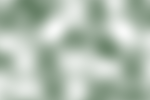
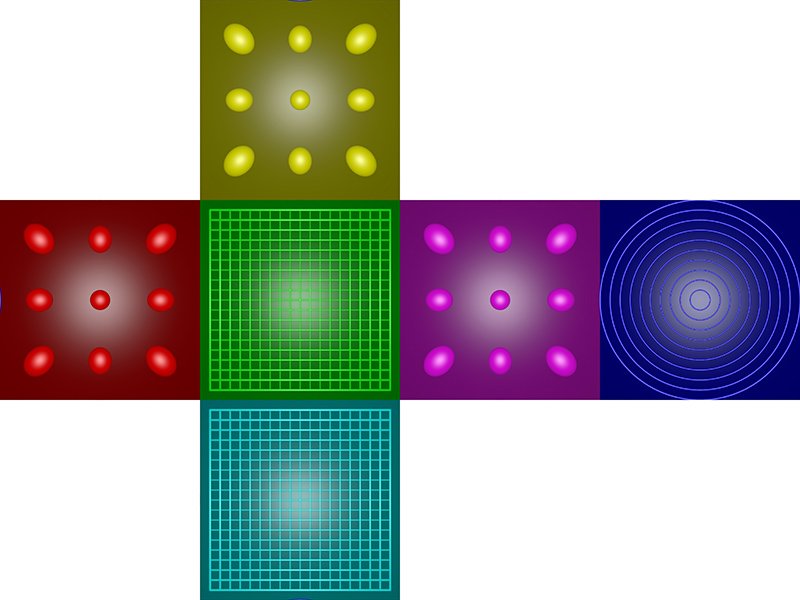
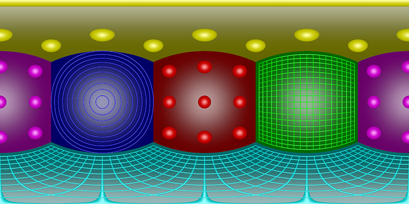
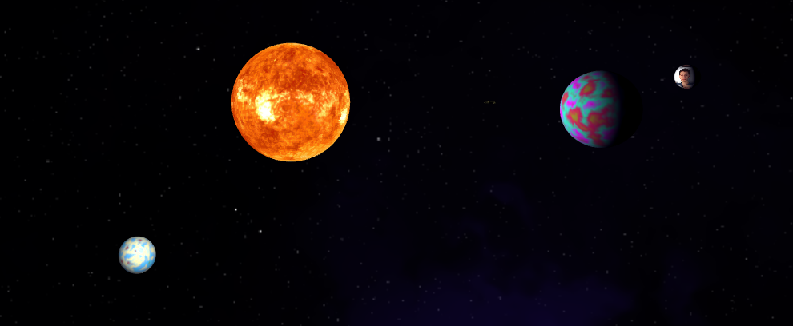
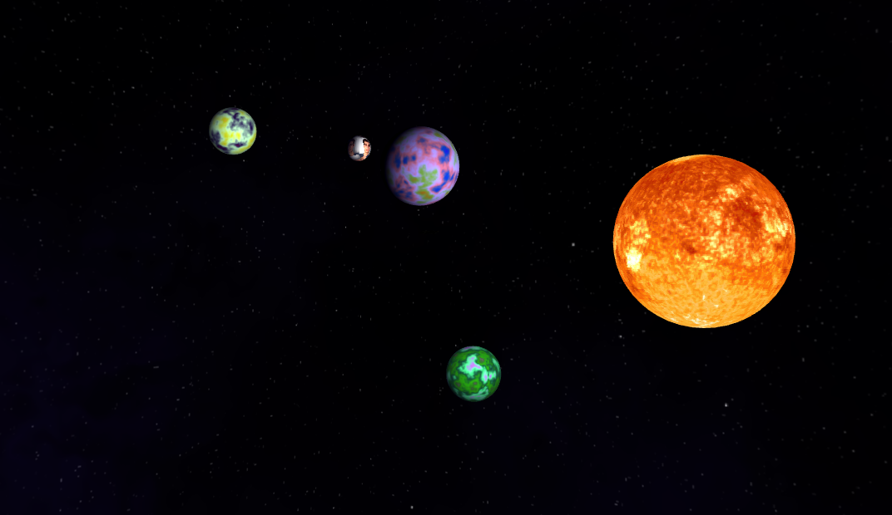
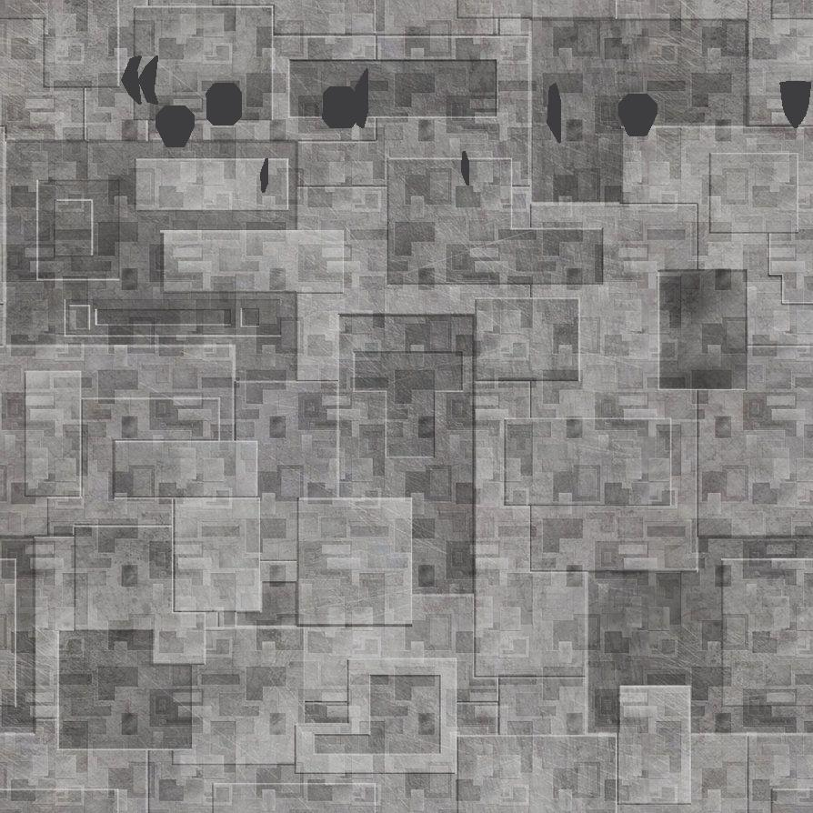
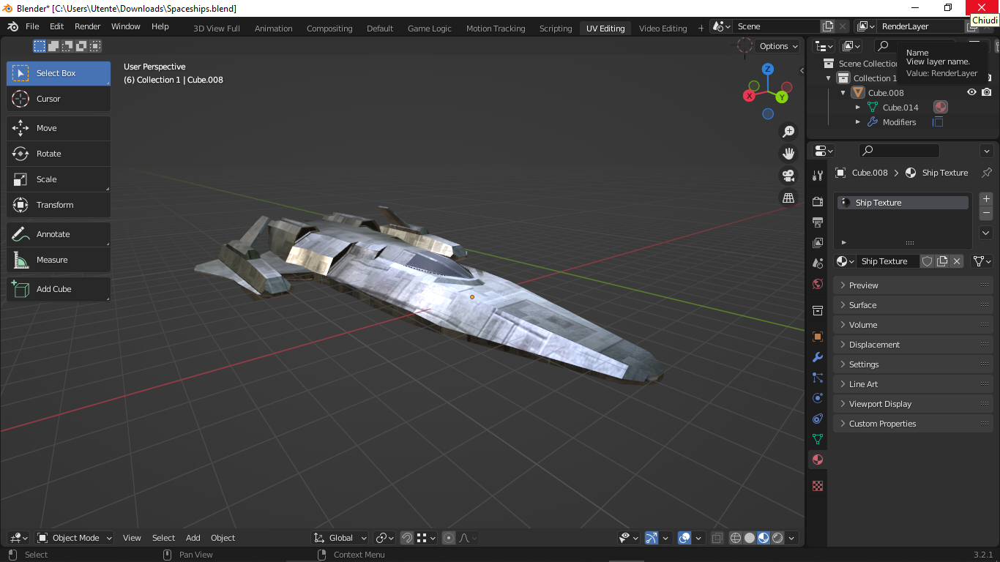
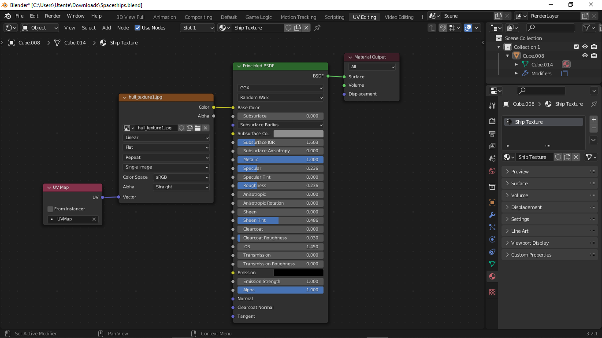
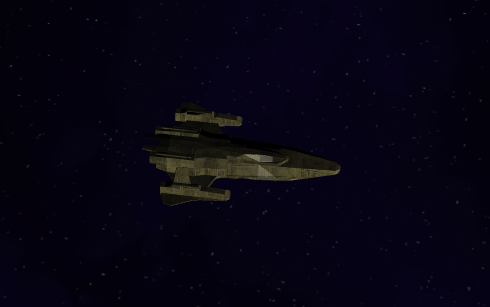
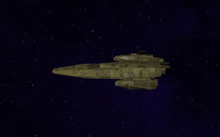

Abstract
Generazione Texture Procedurale per i Pianeti
Nella prima fase di sviluppo ci si è occupati della creazione di
texture procedurali che sono poi utilizzate
sulle mesh sferiche per creare i pianeti.
Questa funzionalità assicura che, riavviando l'applicazione, nessun sistema solare sarà uguale agli altri.
- Simplex Noise: componente che rappresenta la parte casuale dell'algoritmo.
- Texture creation & Coloring: disposizione in formato cubemap e colorazione dei pixel.
Simplex Noise e parametri
Per la generazione delle "altitudini" possono essere usati vari algoritmi (Perlin, Simplex...).
Per questa applicazione è stato scelto il Simplex, data la sua efficienza e generale efficacia rispetto
al "rivale" Perlin.
Essendo un'algoritmo basato su generazione di noise n-dimensionale, i parametri in input corrispodono a
coordinate nello spazio e, di conseguenza, l'output può essere rappresentato in un immagine.
|

|
Queste immagini sono modificabili grazie a
parametri che agiscono sugli input/output.
In questo progetto sono stati utilizzati:
- 3 coordinate in input:
- Scale:
- Octaves:
Creazione Texture e Coloring
Scelta del formato
L'output della creazione è un'immagine .png in cui i pixel sono disposti in modo da creare una cubeMap.
Ciò vuol dire che ci sono 6 facce disposte in modo tale da formare i lati di un cubo.
Questo formato è molto conveniente perchè ci permette di salvare in una immagine 2d la texture di una sfera 3d evitando artefatti causati
dal mismatch dei lati di una texture qualunque.
|

|
|
Una seconda opzione sarebbe stata quella di generare immagini equirettangolari (che contengono le stesse informazioni di una cubeMap, ma in un immagine completa).
Tuttavia la complessità delle operazioni sarebbe stata fin troppo grande per giustificarne l'uso.
|

|
Algoritmo di Disegno
- Si sceglie una coppia di facciate opposte della cubeMap.
- Vengono calcolate tutte le altitudini di una delle due facciate dallo spazio 3-dimensionale.
- Per ogni valore di noise, se ne calcola il colore utilizzando una palette di colori casuale.
Esistono due modi per estrarre il colore dalla palette:
- gradiente: la palette cambia in maniera graduale (es. un valore di 0.3 darà sempre un colore diverso dal valore di 0.35, ma comunque molto simile).
- distinto: la palette è divisa in N colori, il risultato è un'immagine più definita, ma meno realistica.
- Si colora il pixel corrispondente nello spazio 2d su un canvas.
- I punti precedenti vengono ripetuti per ogni altra coppia opposta di facce.
- Il canvas viene convertito in Image()
var img = new Image();
img.src = mc.toDataURL('image/png');
Componenti Sistema Solare
In questa sezione analizziamo gli oggetti renderizzati dalla scena: la loro
definizione,
creazione e
gestione.
Gestione Dati Mesh
Abbiamo bisogno di 2 forme semplici ed una mesh complessa:
- Skybox Quad: un quad che copre il canvas su cui disegnare la skybox. Funzione di creazione vista a lezione.
- Sphere: i dati di una semplice sfera, usata per i pianeti, sole e luna. Funzione di creazione vista a lezione.
- Spaceship: la mesh complessa di un'astronave, con anche le informazioni sul materiale. Creata e Texturata con Blender
Tutti i
VBO e
IBO sono definiti grazie alla libreria
webgl-utils (webglUtils.createBufferInfoFromArrays).
Skybox
- Texture
La texture è una cubeMap scaricata da un sito di generazione procedurale di skybox, ed ogni faccia viene caricata in successione da gl.texImage2D.
Inoltre, usiamo mipmap visto che le dimensioni delle facce sono una potenza di 2.
Corpi Celesti
Sole
- Texture
La texture usata per la stella è un'immagine equirettangolare scaricata da un sito di texture a tema.
Dunque è bastato chiamare texture2D nel fragment shader per avere un risultato soddisfacente.
Anche per la texture del sole utilizziamo mipmap.
- Shaders
La particolarità degli shader del sole è che non hanno alcun sistema di illuminazione. Questo però è ovvio, visto che è proprio il sole ad "emettere" luce.
|

|
Pianeti
- Texture
Per poter caricare la texture procedurale in formato cubeMap, dobbiamo seguire varie fasi:
- Creare un contesto canvas 2d su cui disegnare ogni faccia.
- Definire gli identificatori/target delle facce insieme alle coordinate della faccia stessa sulla texture cubeMap.
{target:gl.TEXTURE_CUBE_MAP_POSITIVE_X,sx:512,sy:256,sWidth:256,sHeight:256,dx:0,dy:0,dWidth:256,dHeight:256},...
- Ottenere la cubeMap dalla generazione procedurale sotto forma di Image.
- Per ogni target, disegnare la faccia sul canvas.
- Usare il contenuto del canvas come array di dati per gl.texImage2D.
Shaders
Per poter mappare le coordinate UV della texture cubeMap ad una sfera usiamo l'attributo normale passato direttamente
al fragment shader.
gl_FragColor = textureCube(u_texture, n);
Per l'illuminazione, calcoliamo la direzione dalla superficie alla luce nel vertex shader:
v_surfaceToLight = u_lightWorldPosition - surfaceWorldPosition.xyz;
Poi, nel fragment shader, la utilizziamo per calcolare la luce che colpisce quel fragment facendo il dot-product
con la normale (in questo caso, tuttavia, la normale era stata ridirezionata con la world matrix nel vertex shader).
float light = dot(normal, surfaceToLightDirection);
Il tutto moltiplicato per il valore ottenuto dalla texturizzazione.
|

|
Astronave
- Model
Il modello dell'astronave è stato importato su Blender da un file .blend esterno.
- Texturing
Per il texturing è stata usata una sola texture, modificata a dovere (ad es. colore del vetro del cockpit).

Quindi basta usare un solo materiale, con metalness al massimo, e roughness non troppo bassa.
Per assegnare la texture al modello, è stata usata la funzione di UV mapping automatico di Blender.
Infine la mesh è stata salvata in formato .obj (Wavefront) con annesso file .mtl.
|


|
- Caricamento Mesh
Grazie alla funzione loadMesh del file load_mesh.js è sato possibile importare positions, normals, texcoords e light parameters
salvati nei file .obj e .mtl precedentemte definiti.
Questi script si appoggiano alla libreria glm_utils.js, che converte i dati .obj in una struttura modificabile.
Poichè utilizziamo un solo materiale, la gestione dei suoi parametri non è troppo complessa, visto che rimangono costanti.
- Shaders
Il metodo di illuminazione dell'astronave, prevede l'utilizzo di tutti i parametri importati dal materiale.
Abbiamo dunque più componenti da considerare.
Il calcolo del colore del frammento (relativo alla texture) è simile a quello dei pianeti ed è sempre definito utilizzando
il vettore surfaceToLightDirection.
Tuttavia, ora il colore della texture è modificato anche dal parametro Kd (o diffuse) del materiale.
Per calcolare il valore di luce speculare, abbiamo anche bisogno del vettore surfaceToViewDirection, ovvero il vettore che collega la camera
con la superficie.
v_surfaceToView = u_viewWorldPosition - surfaceWorldPosition.xyz;
Infine il colore del frammento è l'unione di tutti questi parametri:
gl_FragColor = vec4(
emissive +
ambient * u_ambientLight +
effectiveDiffuse * light +
specular * pow(specularLight, shininess),
effectiveOpacity);
|


|
Funzioni, Parametri e Guida
Parametri
- orbitRadius1: Controlla il raggio dell'orbita del primo pianeta
- orbitRadius2: Controlla il raggio dell'orbita del secondo pianeta
- orbitRadius3: Controlla il raggio dell'orbita del terzo pianeta
- orbitSpeed1: Controlla la velocità dell'orbita del primo pianeta
- orbitSpeed2: Controlla la velocità dell'orbita del secondo pianeta
- orbitSpeed3: Controlla la velocità dell'orbita del terzo pianeta
- orbitSpeedMoon: Controlla la velocità dell'orbita della luna
- rotationSpeed1: Controlla la velocità di rotazione sul proprio asse del primo pianeta
- rotationSpeed2: Controlla la velocità di rotazione sul proprio asse del secondo pianeta
- rotationSpeed3: Controlla la velocità di rotazione sul proprio asse del terzo pianeta
- rotationSpeedMoon: Controlla la velocità di rotazione sul proprio asse della luna
- D: Se freeCam è attivo o targetShip è disattivato => controlla la distanza della camera
- freeCam: Permette di cambiare da visuale dietro l'astronave, a visuale dinamica
- targetShip: Se è attivo la visuale punta sulla nave, altrimenti sul sole.
- onMobile: Permette di visualizzare l'overlay di dpad per aiutare l'esperienza mobile.
- acc: Permette di cambiare la velocità della nave
- decoupled: Permette di "spegnere" i propulsori automatici che cercano di fermare la nave, simulazione effettiva di viaggio nello spazio.
Comandi
- W: Accelerazione in avanti
- S: Accelerazione indietro
- A: Imbardata a sinistra
- D: Imbardata a destra
- Arrow Up: Accelerazione in alto
- Arrow Down: Accelerazione in basso
- Arrow Left: Accelerazione a sinistra
- Arrow Right: Accelerazione a destra
- Mouse Click and Drag: Se freeCam=true o targetShip=false, rotazione visuale.
Una volta attivato onMobile, un'overlay bianco apparirà su schermo. (Creato su un canvas 2d trasparente che si sovrappone al nostro WebGL canvas).
- Left DPAD: Corrisponde ai comandi WASD definiti in precedenza
- Right DPAD: Corrisponde ai comandi Arrow definiti in precedenza
- Touch and Drag: Se freeCam=true o targetShip=false, rotazione visuale.
Sviluppi Futuri
- Bump Mapping: Implementare Bump Mapping sui pianeti per renderli più dettagliati
- Multipass Shadow Mapping: Implementare un sistema di shadowing che permetta la proiezione di ombre sugli oggetti illuminati da una point light (Depth Buffer + cubeMap)
- Better Spaceship Controls: Aggiungere beccheggio e rollio e gestire più realisticamente il movimento.